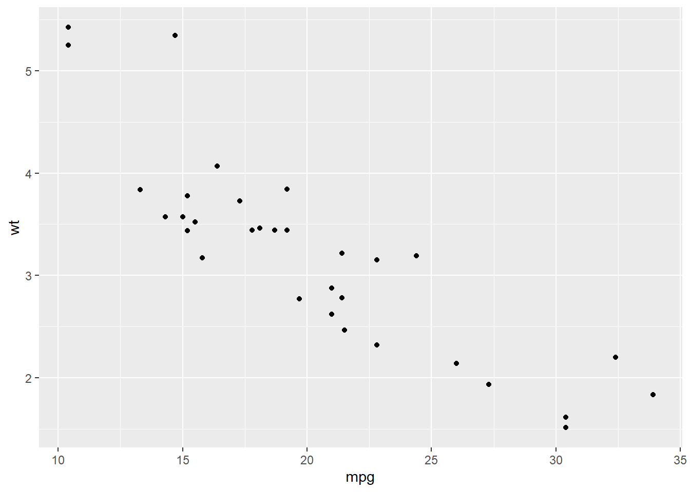

Chapter 6 Statistics in R
6.1 simple statistics
6.1.1 Mean and median
We could use the base functions to do some simple statistical analysis directly.
## [1] 28.77273## [1] 296.1.3 Quantiles
## 0% 25% 50% 75% 100%
## 0.0 10.0 29.0 31.5 100.0## 25%
## 106.2 Simple Linear regression
Our example is the dataset mtcars, and we want to explore the relationship between mpg (Miles/(US) gallon) and wt (Weight (1000 lbs)).

It seems there is a linear relationship between these two variables. We then add a linear line to fit them.

We then use the lm() function to fit this linear relationship and use summary() function to see the result.
##
## Call:
## lm(formula = wt ~ mpg, data = mtcars)
##
## Residuals:
## Min 1Q Median 3Q Max
## -0.6516 -0.3490 -0.1381 0.3190 1.3684
##
## Coefficients:
## Estimate Std. Error t value Pr(>|t|)
## (Intercept) 6.04726 0.30869 19.590 < 2e-16 ***
## mpg -0.14086 0.01474 -9.559 1.29e-10 ***
## ---
## Signif. codes: 0 '***' 0.001 '**' 0.01 '*' 0.05 '.' 0.1 ' ' 1
##
## Residual standard error: 0.4945 on 30 degrees of freedom
## Multiple R-squared: 0.7528, Adjusted R-squared: 0.7446
## F-statistic: 91.38 on 1 and 30 DF, p-value: 1.294e-10## [1] 0.7528328## (Intercept) mpg
## 6.047255 -0.1408626.3 Multiple Regression
Most of the time, we need to examine the relationship between one dependent variable with several independent variables. Then we have carry out multiple regression. Here, multiple indicates more than one independent variables.
##
## Call:
## lm(formula = mpg ~ disp + hp + wt, data = mtcars)
##
## Residuals:
## Min 1Q Median 3Q Max
## -3.891 -1.640 -0.172 1.061 5.861
##
## Coefficients:
## Estimate Std. Error t value Pr(>|t|)
## (Intercept) 37.105505 2.110815 17.579 < 2e-16 ***
## disp -0.000937 0.010350 -0.091 0.92851
## hp -0.031157 0.011436 -2.724 0.01097 *
## wt -3.800891 1.066191 -3.565 0.00133 **
## ---
## Signif. codes: 0 '***' 0.001 '**' 0.01 '*' 0.05 '.' 0.1 ' ' 1
##
## Residual standard error: 2.639 on 28 degrees of freedom
## Multiple R-squared: 0.8268, Adjusted R-squared: 0.8083
## F-statistic: 44.57 on 3 and 28 DF, p-value: 8.65e-11## [1] 0.82683616.4 Logistic regression
The above two examples both use continuous variables as their dependent variables. How about using a binomial variable a dependent variable? Then we need to do logistic regression. There are many functions to do this. Here, we introduced the glm() function.
##
## Call:
## glm(formula = am ~ cyl + hp + wt, family = binomial, data = mtcars)
##
## Deviance Residuals:
## Min 1Q Median 3Q Max
## -2.17272 -0.14907 -0.01464 0.14116 1.27641
##
## Coefficients:
## Estimate Std. Error z value Pr(>|z|)
## (Intercept) 19.70288 8.11637 2.428 0.0152 *
## cyl 0.48760 1.07162 0.455 0.6491
## hp 0.03259 0.01886 1.728 0.0840 .
## wt -9.14947 4.15332 -2.203 0.0276 *
## ---
## Signif. codes: 0 '***' 0.001 '**' 0.01 '*' 0.05 '.' 0.1 ' ' 1
##
## (Dispersion parameter for binomial family taken to be 1)
##
## Null deviance: 43.2297 on 31 degrees of freedom
## Residual deviance: 9.8415 on 28 degrees of freedom
## AIC: 17.841
##
## Number of Fisher Scoring iterations: 8Reference